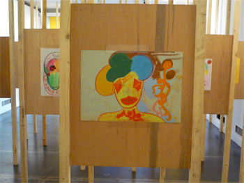
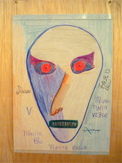

LIEGI - “Quando ho visitato il Mad Musée di Liegi il direttore mi ha mostrato molti dipinti di artisti con malattia mentale diversi per nazionalità, per segno e per storia. Per me Alessandra possedeva la chiave d’accesso a tutti questi artisti e questo è impressionante,” afferma Riccardo Bargellini, direttore dell’atelier Blu Cammello di Livorno, in collaborazione con la psichiatra Ivana Bianco.
Il Blu Cammello nasce nel 1999 negli spazi del Centro Basaglia di Livorno con lo scopo di sviluppare le potenzialità creative degli ospiti del dipartimento di Salute Mentale Adulti della Asl di Livorno. Il 1999 è stato anche l’anno in cui Riccardo Bargellini, pittore e visual designer , ha iniziato a lavorare presso il Blu Cammello con Alessandra “Michelangelo” Brigiotti (1961-2009): “Sono partito senza nessuna preparazione. All’inizio avevo una sorta di ‘profana’ paura della malattia, della pazzia e Alessandra era quella che m’incuteva più ‘paura’ per via della sua voce infantile e degli scatti improvvisi – aveva delle continue voci che la ossessionavano. Questa cosa col tempo s’è persa e mi è sempre piaciuto pensare che fosse anche merito dell’atelier.”
Le opere di Alessandra “Michelangelo” Brigiotti sono state esposte al Mad Musée di Liegi nella mostra temporanea “Disegno” dal 27 novembre 2010 al 26 febbraio 2011. Si tratta della prima mostra dell’artista all’estero accompagnata dalla prima pubblicazione in assoluto sull’artista. Secondo Bargellini, Alessandra è un’artista outsider pura, perché non aveva bisogno di modelli o di suggerimenti: “Lei arrivava e iniziava a disegnare furiosamente, come se noi non ci fossimo, aveva tutto dentro. Conoscendola nel tempo ho poi capito che quella che disegnava era la sua vita. Alessandra raccontava la sua quotidianità e il suo dolore, tutta la sua iconografia è un atto liberatorio per convogliare il dolore in un equilibrio. La grotta ad esempio, uno degli oggetti ricorrenti nell’opera di Alessandra, rappresenta una sorta di abisso, di inferno.” Rispetto ad altri artisti dell’atelier, Alessandra era una persona particolarmente silenziosa che viveva in un suo mondo privato. Nonostante la sua proverbiale riservatezza, Bargellini ricorda con tenerezza l’occasione in cui l’artista si fece intervistare per un video a cui stava lavorando: “Era molto bella perché si sentiva un’attrice in quel momento e mi sorprese molto. Le cose che diceva erano bellissime, diceva di parlare con le foreste e di conoscere le lingue del passato, forse anche per via della sua esperienza scolastica”.
Bargellini ritiene che i numerosi segni di morte, come le corone dei morti, i cimiteri, le tombe, siano allo stesso modo dei riferimenti alla sua vita, segnata dal lutto della sorella, morta quando Alessandra aveva 9 anni, e dal fatto che il padre lavorasse presso i cimiteri comunali. Alessandra si è ammalata in età adulta dopo aver completato le magistrali e due anni di giurisprudenza. Le sue conoscenze pregresse emergono nei suoi dipinti nei riferimenti ad esempio Dante e Picasso: “Citava un mondo che ricordava, magari un percorso scolastico, ma non era mai uno scimmiottare Picasso”, aggiunge Bargellini. Cambiò poi il suo nome in Michelangelo in occasione dell’arte-fiera di Verona del 2005. Bargellini ricorda così l’esperienza: “Le chiesi di autografare i suoi disegni. Lei scrisse il suo nome poi si fermò, guardò la firma per un minuto, la sbarrò con una X e scrisse Michelangelo. Da quel momento si firmò sempre Alessandra Michelangelo”.
“Per me Alessandra è stata una maestra a tutti i livelli - racconta Bargellini -. “In lei vedevi la libertà dell’espressione senza la necessità di dover conquistare qualcuno. Era libera anche rispetto al materiale. La prima volta che iniziò a dipingere inzuppava lo stesso pennello in questo barattoli costosissimi e io la guardavo pensando: ‘Mi sta rovinando tutti i colori’. Poi ho realizzato che ero io a non capire: come persona sana io quantifico tutto mentre a lei non importava assolutamente nulla della materia con cui lavorava o del successo dei suoi dipinti. Per lei contava solo il gesto della creazione, il liberarsi di un’ossessione. Ecco la purezza”. Come il Mad Musèe, Bargellini lotta perché l’opera di questi artisti venga riconosciuta nel panorama dell’arte contemporanea: “I miei artisti non sono più artisti degli altri perché sono matti. Per me le loro opere sono opere d’arte a tutti gli effetti, non è necessario conoscere la storia psichiatrica dell’artista. Alessandra non è un artista outsider, è un artista contemporanea”.